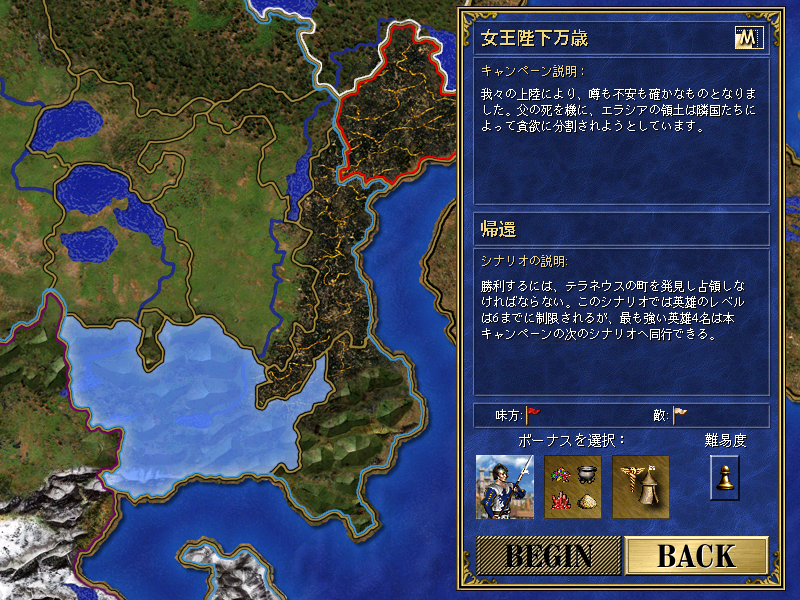

ご意見・誤訳の報告
誤訳や不自然な訳に気づいたら、GitHub の Issues で教えてください。
ヒーローズ・オブ・マイト・アンド・マジック（Heroes of Might and Magic）シリーズを日本語で遊べるようにする、非公式のファンメイド日本語化プロジェクトです。 GOG.com で販売されている版を対象にしています。 どのパッチも、ゲームのファイルを書き換えずに日本語で遊べるようにし、外せば英語に戻ります。


誤訳や不自然な訳に気づいたら、GitHub の Issues で教えてください。